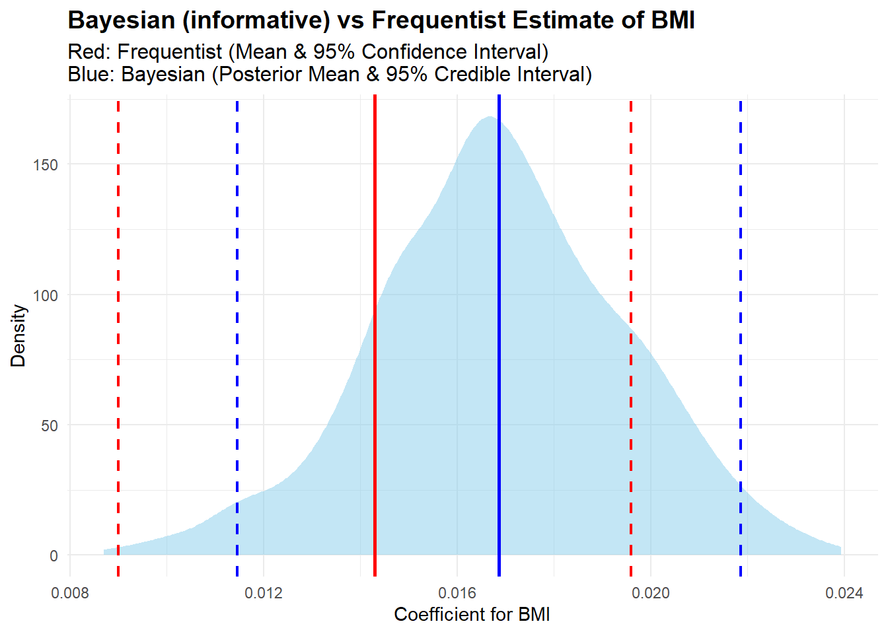

In our previous lecture, using Bayesian model, we explained the effect of body mass index (BMI) on bone mineral density (BMD). We used weakly informative prior, and we discussed in one of our previous lectures that use of weakly informative priors are common in modern Bayesian modeling, as it balances interpretability and robustness of the posterior distribution.
Historically, Bayesian models used Inverse-Gamma priors for variance parameters, because it has support on positive values and has nice mathematical properties (conjugate prior for the normal distribution). However, in hierarchical Bayesian model (e.g., Bayesian regression), this might cause problems. For example, to represent non-informativeness we can consider \(\text{IG}(a=0.001,b=0.001)\), with very small values for the hyper-parameters of the distribution. Even though \(\text{IG}(a=0.001,b=0.001)\) looks non-informative, it biases the model toward tiny variance values. It is “too informative” in a bad way — not because it is strong, but because it pretends to be weak while still influencing the outcome. Furthermore, use of \(\text{IG}(a,b)\) often tends to favor small variances, that can lead to underestimating uncertainty in group-level effects. We have also seen that in the regression settings, if the model is complex, then use of \(\text{IG}(a,b)\). It can also be tricky to get convergence for the MCMC sample of the variance parameter, as use of \(\text{IG}(a,b)\) can be spiky near zero making it behave weirdly during inference.
To avoid this issues with Inverse Gamma distribution, the Half-Cauchy distribution (i.e., a Cauchy distribution restricted to positive values) is popularly used. Half-Cauchy also behaves as weakly informative prior and provides better inference. We prefer using the Half-Cauchy prior for variance parameter \(\sigma^2\) because it has several useful properties. It has heavy tails, which means it allows for large values of \(\sigma^2\) when the data support it, rather than cutting them off or overly constraining them. Unlike the Inverse Gamma prior, it is less informative near zero and does not push the variance toward small values, which can be especially important in hierarchical models. It also provides a form of regularisation by gently pulling estimates toward smaller values without being too aggressive, allowing the data to guide the estimates more naturally.
One of the issues may arise for Half-Cauchy \(\sigma^2\) prior in hierarchical Bayesian model relates to the non-conjugacy. However, use of cleaver MCMC sampling algorithm such as HMC can provide a solution to this problem.
Now, we can rewrite the DAG we provided in our last lecture related to the BMD model, where we replace the Inverse Gamma prior by the Half-Cauchy.
We now use the Half-Cauchy prior distribution for the variance parameter instead of the Inverse Gamma distribution, while keeping the priors for \(\beta_0\) and \(\beta_1\), as normal distributions \(N(0,10^2)\). This gives us the following prior distributions:
Hence, we get the posterior summaries based on the Half-Cauchy prior distribution with hyper-parmater one as:
Code
library(brms)
Loading required package: Rcpp
Loading 'brms' package (version 2.22.0). Useful instructions
can be found by typing help('brms'). A more detailed introduction
to the package is available through vignette('brms_overview').
Attaching package: 'brms'
The following object is masked from 'package:stats':
ar
Family: gaussian
Links: mu = identity; sigma = identity
Formula: BMD ~ BMI
Data: bmd_data (Number of observations: 169)
Draws: 1 chains, each with iter = 2000; warmup = 1000; thin = 1;
total post-warmup draws = 1000
Regression Coefficients:
Estimate Est.Error l-95% CI u-95% CI Rhat Bulk_ESS Tail_ESS
Intercept 0.42 0.07 0.28 0.54 1.01 1221 936
BMI 0.01 0.00 0.01 0.02 1.01 1329 940
Further Distributional Parameters:
Estimate Est.Error l-95% CI u-95% CI Rhat Bulk_ESS Tail_ESS
sigma 0.15 0.01 0.14 0.17 1.01 676 555
Draws were sampled using sampling(NUTS). For each parameter, Bulk_ESS
and Tail_ESS are effective sample size measures, and Rhat is the potential
scale reduction factor on split chains (at convergence, Rhat = 1).
Code
#posterior_summary(bmd_model)#plot(bmd_model)
The model result suggests that the standard deviation (\(\sigma\)) of residuals is estimated to be around 0.15, with the uncertainty around this estimate being quite low (Est.Error = 0.01). The credible interval for sigma is between 0.14 and 0.17, and the MCMC sampling appears to have converged well based on the Rhat and ESS values.
6.2.2 Weakly informative and informative priors for \(\beta_1\)
Suppose, instead using weakly informative prior for \(\beta_1\) (the slope for BMI) we want to use an informative prior. This refers to considering one unit increase in BMI, BMD increases by approximately 0.05 units on average, we also knowfrom the past data that the standard deviation related to this is very low, i.e., 0.01. Hence, we write the prior distribution as: \(\beta_1 \sim N(0.05, 0.01)\).
Code
library(brms)bmd_model_inform <-brm(formula = BMD ~ BMI,data = bmd_data,family =gaussian(),prior =c(prior(normal(0.05, 0.01), class ="b", coef ="BMI"), # Informative prior for beta_1prior(normal(0, 100), class ="Intercept"), # Intercept priorprior(cauchy(0, 1), class ="sigma") # Half-Cauchy prior for sigma ),iter =2000,chains =1,cores =3,seed =123)
Family: gaussian
Links: mu = identity; sigma = identity
Formula: BMD ~ BMI
Data: bmd_data (Number of observations: 169)
Draws: 1 chains, each with iter = 2000; warmup = 1000; thin = 1;
total post-warmup draws = 1000
Regression Coefficients:
Estimate Est.Error l-95% CI u-95% CI Rhat Bulk_ESS Tail_ESS
Intercept 0.36 0.07 0.23 0.49 1.00 1297 594
BMI 0.02 0.00 0.01 0.02 1.00 1246 596
Further Distributional Parameters:
Estimate Est.Error l-95% CI u-95% CI Rhat Bulk_ESS Tail_ESS
sigma 0.16 0.01 0.14 0.17 1.00 898 583
Draws were sampled using sampling(NUTS). For each parameter, Bulk_ESS
and Tail_ESS are effective sample size measures, and Rhat is the potential
scale reduction factor on split chains (at convergence, Rhat = 1).
From the results related to informative prior for \(\beta_1\), we can say that the informative prior for \(\beta_1\) tightly constrained the estimate of the effect of BMI on BMD, yielding a posterior mean estimate of 0.02 with a very narrow and precise credible interval \([0.01, 0.02]\). The model shows very high precision for this parameter, with low uncertainty, suggesting that the prior provided strong information that shaped the posterior estimate.
Comparison
Now we will provide a comparison of the \(\beta_1\) estimates from two models: one where we used an informative prior, i.e., \(\beta_1\sim N(0.05,0.01)\) and another where we used a weakly informative prior \(\beta_1\sim N(0,10^2)\).
This above plots show how two different types of prior information affect our estimate of a parameter, \(\beta_1\). The blue curve represents the informative prior, this results in a distribution indicating higher certainty. The red curve represents the weakly informative prior, meaning we have less prior knowledge about \(\beta_1\). This results in a distribution that is more spread out, indicating less certainty.
6.2.3 Bayesian vs. Frequentist Comparisons
Now we explain and compare the Bayesian and frequentist estimates, where we used informative prior distribution.
Code
library(jtools)lm_model <-lm(BMD ~ BMI, data = bmd_data)jtools::summ(lm_model)
MODEL INFO:
Observations: 169
Dependent Variable: BMD
Type: OLS linear regression
MODEL FIT:
F(1,167) = 27.98, p = 0.00
R² = 0.14
Adj. R² = 0.14
Standard errors:OLS
-----------------------------------------------
Est. S.E. t val. p
----------------- ------ ------ -------- ------
(Intercept) 0.42 0.07 6.11 0.00
BMI 0.01 0.00 5.29 0.00
-----------------------------------------------
Code
lm_coef <-coef(summary(lm_model))bmi_est <- lm_coef["BMI", "Estimate"]bmi_se <- lm_coef["BMI", "Std. Error"]ci_low <- bmi_est -1.96* bmi_seci_high <- bmi_est +1.96* bmi_sepost <-as_draws_df(bmd_model_inform)post_bmi <- post$b_BMIbayes_mean <-mean(post_bmi)bayes_ci <-quantile(post_bmi, probs =c(0.025, 0.975))ggplot() +geom_density(aes(x = post_bmi), fill ="skyblue", alpha =0.5, color =NA) +geom_vline(xintercept = bmi_est, color ="red", size =1) +geom_vline(xintercept = ci_low, linetype ="dashed", color ="red", size =0.8) +geom_vline(xintercept = ci_high, linetype ="dashed", color ="red", size =0.8) +geom_vline(xintercept = bayes_mean, color ="blue", size =1) +geom_vline(xintercept = bayes_ci[1], linetype ="dashed", color ="blue", size =0.8) +geom_vline(xintercept = bayes_ci[2], linetype ="dashed", color ="blue", size =0.8) +labs(title ="Bayesian vs Frequentist Estimate of BMI Coefficient - Informative Prior",subtitle ="Red: Frequentist (MLE & 95% Confidence Interval), Blue: Bayesian (Posterior Mean & 95% Credible Interval)",x ="Coefficient for BMI",y ="Density" ) +theme_minimal() +theme(plot.title =element_text(size =14, face ="bold"),plot.subtitle =element_text(size =12))

The above plot shows the estimates of the BMI coefficient (\(\beta_1\)) for BMD using both frequentist and Bayesian methods. On the x-axis, we see the coefficient for BMI, ranging from approximately 0.008 to 0.024, while the y-axis represents density, showing the distribution of the estimates.
In Bayesian inference, the blue shaded area represents our posterior distribution of \(\beta_1\), which incorporates both prior information and observed data. The vertical blue solid line indicates our Bayesian posterior mean, and the vertical blue dashed lines show the 95% credible interval. This interval represents the range within which \(\beta_1\) lies with 95% probability, given our prior and the data. The Bayesian approach provides a more nuanced estimate that reflects both our prior beliefs and the observed data, resulting in a posterior distribution that can be more or less spread out depending on the prior and the data.
Whereas, the frequentist approach relies solely on the observed data to provide point estimates and confidence intervals. The vertical red solid line represents our Frequentist maximum likelihood estimate (MLE) of \(\beta_1\), and the vertical red dashed lines show the 95% confidence interval. This interval represents the range within which \(\beta_1\) would lie in 95% of repeated samples, assuming the true value is fixed. The Frequentist estimate does not incorporate any prior information and is based solely on the variability in the observed data.
The key difference highlighted by this plot is how each method estimates and interprets \(\beta_1\). Our Bayesian credible interval can be narrower due to the influence of the informative prior, suggesting that prior information has influenced the estimate. In contrast, the Frequentist confidence interval is based only on the observed data and may be wider or narrower depending on the sample size and variability. This plot emphasizes our Bayesian approach’s ability to incorporate prior knowledge, resulting in a more informed and potentially more precise estimate of \(\beta_1\).
6.3 Further Model Development
Following the BMD example, where we explore the influence of BMI on BMD. Now, we might want to ask: What role does ‘Age’ or ‘Sex’ of the patient play in this relationship?
As people age, their BMD naturally decreases over time, and age also influences factors like BMI. Similarly, sex affects both BMI and BMD, with women being more likely to experience a decline in BMD, particularly in conditions like osteoporosis. These factors age and sex may act as confounders, influencing both BMI and BMD. Hence, we write the DAG using these variables:
# graph LR
# M("BMI") --> B("BMD")
# A("Age") --> M
# S("Sex") --> M
# A --> B
# S --> B
Code
library(DiagrammeR)grViz(" digraph LR { M [label = 'BMI'] B [label = 'BMD'] A [label = 'Age'] S [label = 'Sex'] M -> B A -> M S -> M A -> B S -> B }")
In this case, the estimand is the specific effect of BMI on BMD, while accounting for the influence of age and sex as confounders. The goal is to isolate the effect of BMI on BMD after adjusting for these other variables.
The estimator we define here is the Bayesian model, i.e., the Bayesian multiple linear regression model. This model adjusts for confounders like age and sex, helping us accurately estimate the causal effect of BMI on BMD.
The estimate is the actual numerical value derived from the data using the chosen estimator. For example, if the estimate is 0.03, this could represent the change in BMD associated with a one-unit increase in BMI, after accounting for the effects of age and sex.
6.3.1 Bayesian Model Development
We now develop the Bayesian model with all these four variables. Hence, we write the Bayesian model as:
\[
\text{BMD}_i \sim N(\beta_0 + \beta_1 \cdot \text{BMI}_i + \beta_2 \cdot \text{Age}_i + \beta_3 \cdot \text{Sex}_i, \sigma^2)
\] Where, \(\beta_0\) is the intercept, \(\beta_1\) is the coefficient for BMI, \(\beta_2\) is the coefficient for Age, \(\beta_3\) is the coefficient for Sex (with a reference category; for example, if Sex is binary, it could be “Male” vs. “Female”). This model also includes the variance \(\sigma^2\) of the error term. Now, assuming weakly informative prior we write:
\(\beta_0 \sim \mathcal{N}(0, 10^2)\)
\(\beta_1 \sim \mathcal{N}(0, 10^2)\)
\(\beta_2 \sim \mathcal{N}(0, 10^2)\)
\(\beta_3 \sim \mathcal{N}(0, 10^2)\)
\(\sigma^2 \sim \text{Half-Cauchy}(0, 1)\)
Note that the model equation can be also written as:
\[
\text{BMD}_i = \beta_0 + \beta_1 \cdot \text{BMI}_i + \beta_2 \cdot \text{Age}_i + \beta_3 \cdot \text{Sex}_i + \epsilon_i
\] where, \(\epsilon_i\) is the error term of the model.
Hence, we draw the DAG for this Bayesian model with prior and hyper-prior parameters as:
#pp_check(bmd_model_multi, type = "hist")#pp_check(bmd_model_multi, type = "boxplot")#pp_check(bmd_model_multi, type = "scatter_avg")pp_check(bmd_model_multi, type ="ecdf_overlay")
If the posterior predictive plots match the observed data closely, your model fits well.
If the posterior predictive data looks too wide/narrow or misses patterns, you might need:
Better predictors
A different model family
Transformation of variables
6.4 Summary
…
6.5 Live tutorial and discussion
The final learning activity for this week is the live tutorial and discussion. This tutorial is an opportunity for you to to interact with your teachers, ask questions about the course, and learn about biostatistics in practice. You are expected to attend these tutorials when possible for you to do so. For those that cannot attend, the tutorial will be recorded and made available on Canvas. We hope to see you there!
6.6 Tutorial Exercises
Solutions will be provided later after the tutorial.